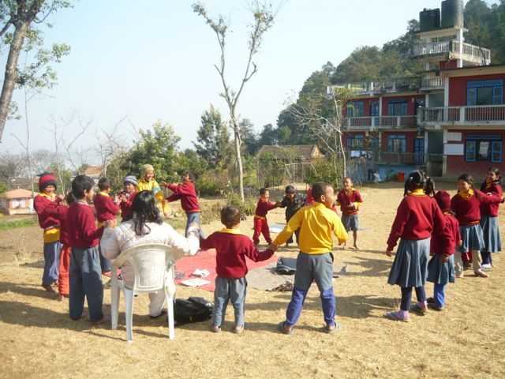
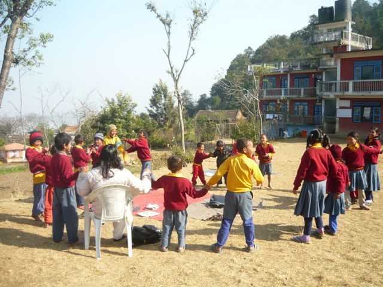

L'association
YOGA SOLIDARITY est une association à but non lucratif, à caractère humanitaire, dont le siège social est situé à Quimper en Bretagne (plan à partir du siège social 53 impasse de l'Odet à Quimper), France.
Elle s'adresse à tout public, sans discrimination, et ses actions se situent en dehors de tout courant politique et religieux. Elle a été créée le 12 juin 2015. Son bureau est composé de 6 membres, tous bénévoles et impliqués depuis de longues années dans la pratique ou l'enseignement du yoga.
Son but est :
- de collecter des fonds pour soutenir des causes humanitaires et toute situation d'urgence, de détresse, de misère, liées à la survie, la santé et l'éducation, au niveau national et international,
- d'organiser des actions de solidarité en partenariat avec des associations, fondations, institutions publiques, sociétés privées, écoles, et autres poursuivant des objectifs similaires, en France ou à l’étranger,
- la transmission de l'enseignement du yoga, et aussi toute autre activité d'enseignement ou de services permettant de collecter des fonds pour financer l'objet statutaire de l'association.
Le principe de chaque action de solidarité est de donner bénévolement un enseignement ou un service en contre partie duquel celui qui reçoit offre un don de nature pécuniaire qui sera reversé à un bénéficiaire désigné préalablement par les membres du bureau de l'association.
Les cours
Les cours de hatha yoga, accessibles à tous, sont composés de pratiques douces de postures, de concentration, de respiration et de relaxation.
Participation libre : les dons sont reversés intégralement à un orphelinat de Kathmandu au Népal, le Sri Aurobindo Yoga Mandir http://www.auronepal.net
Réservation : 06 82 39 72 17 contact@yogasolidarity.org
Dates et lieux :
Samedi 13 juin de 18h00 à 19h30 à Aqua-Forme, allée du Rouillen, 29500 ERGUE GABERIC http://aqua-forme.com
Prévoir serviette pour recouvrir tapis fourni et couverture légère.
Mercredi 17 et 24 juin, et 1er juillet de 19h15 à 20h45 EMBA (Ecole Supérieure de la Chambre de Commerce), Campus de Creach Gwenn, 29000 QUIMPER http://www.emba.fr
Prévoir tapis et couverture légère
Juillet/Août, en soirée, en plein-air, au Vallons St Laurent (derrière l'hôpital), rue des Sept Îles, 29000 QUIMPER
Prévoir tapis et couverture légère
Nos actions de solidarité
YOGA SOLIDARITE NEPAL
C'est la première action de solidarité organisée par l'association Yoga Solidarity pour venir en aide à un ashram/orphelinat de Kathmandu au Népal, le Sri Aurobindo Yoga Mandir http://www.auronepal.net/ suite au séisme meurtrier d'avril 2015.
Le Yoga
"Le yoga est un cadeau inestimable de l'ancienne tradition indienne. Il incarne l'unité du mental et du corps; de la pensée et de l'action; de la retenue et de l'accomplissement; de l'harmonie entre l'homme et la nature et une approche holistique de la santé et du bien-être. Le yoga, ce n'est pas des exercices mais découvrir le sens de l'unité entre nous, le monde et la nature".
Discours du premier ministre de l'Inde à l'assemblée générale des Nations Unies le 27 Septembre 2014 pour déclarer la journée internationale du yoga le 21 juin.
Faire un don
3 possibilités pour faire un don au Sri Aurobindo Yoga Mandir (ashram/orphelinat de Kathmandu au Népal) http://www.auronepal.net
1 – sur place près de chez vous, en participant à un cours de yoga ou toute autre animation proposée par Yoga Solidarity
Participation libre : dons en espèces, ou chèques à l'ordre de Yoga Solidarity
Reçu fourni. Dossier de reçus pour défiscalisation en cours.
2 – par virement bancaire, national ou international, directement au titulaire du compte bancaire du Sri Aurobindo Yoga Mandir grâce aux coordonnées bancaires suivantes :
3 – en cliquant sur le lien http://www.gofundme.com/helpauronepal
Devenir adhérent
Devenir adhérent c'est soutenir l'association Yoga Solidarity, participer aux frais de fonctionnement par le règlement d'une cotisation annuelle et être titulaire d'un droit de vote aux assemblées générales.
Si vous souhaitez devenir adhérent de l'association Yoga Solidarity, il vous suffit de :
- remplir et retourner le bulletin d'inscription à Yoga Solidarity 53 Impasse de l'Odet 29000 QUIMPER ou par mail à contact@yogasolidarity.org (pj bulletin)
- régler la cotisation annuelle d'un montant libre au dessus du seuil minimal de 5 euros. La cotisation est individuelle et valable du 1er janvier (ou date d'adhésion) au 31 décembre de l'année en cours.
Contact
Association YOGA SOLIDARITY
53 Impasse de l'Odet (siège social)
29000 QUIMPER
06 82 39 72 17
contact@yogasolidarity.org
Média
 

Voir les photos
Liens
Sri Aurobindo Yoga Mandir Checkpost
Thankot P. O. Box: 1993
KATHMANDU
Nepal
http://www.auronepal.net/
Bihar School of Yoga
Ganga Darshan
Fort
MUNGER
Bihar 811201
India
http://www.biharyoga.net/
EMBA Ecole Supérieure de la Chambre de Commerce
Campus de Creach Gwenn
29000 QUIMPER
France
http://www.emba.fr/